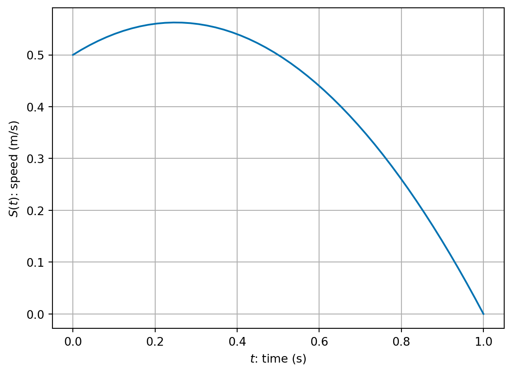
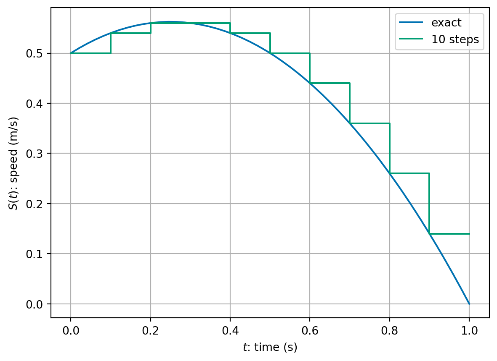
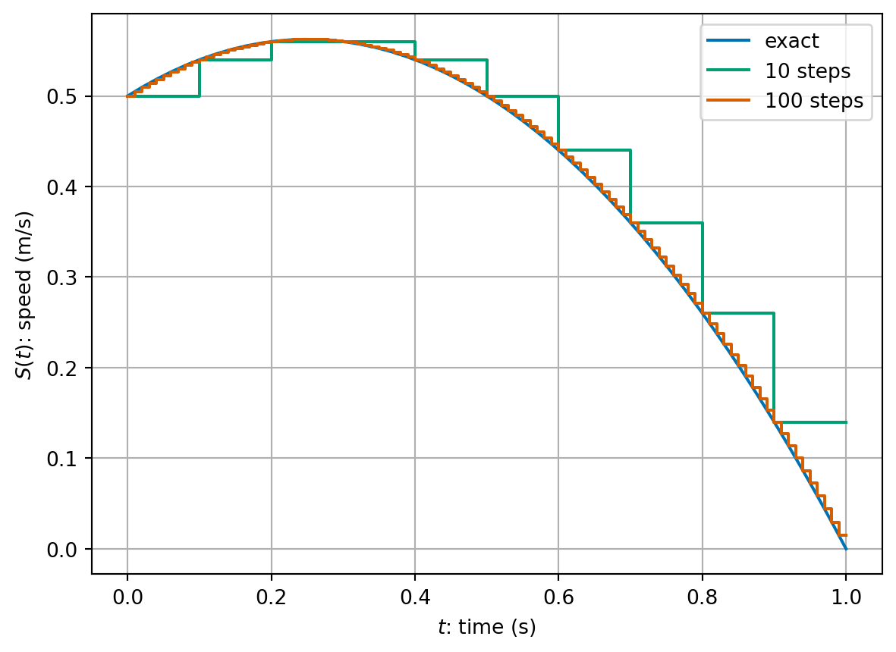
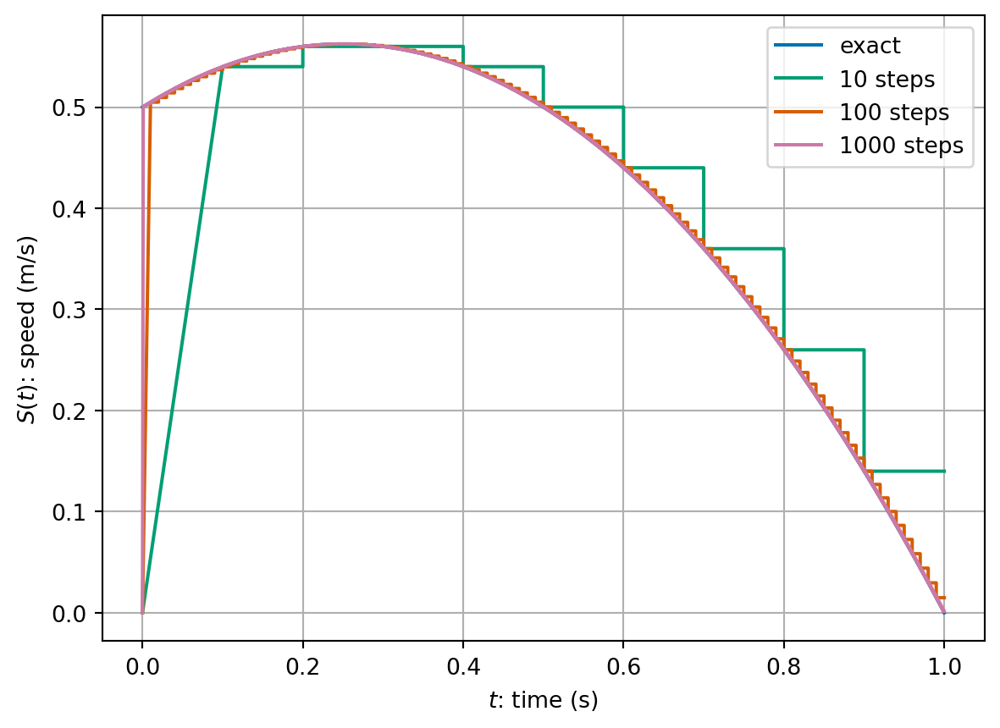
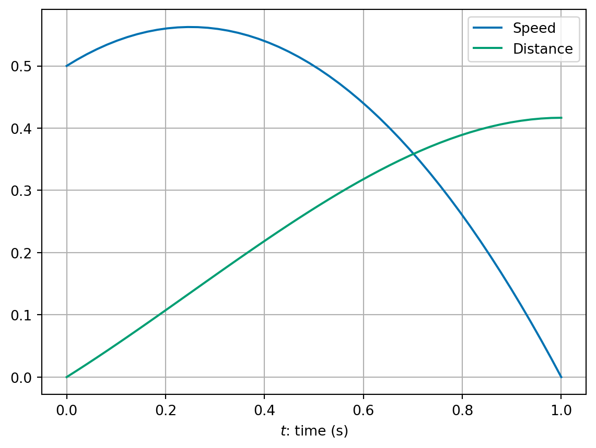
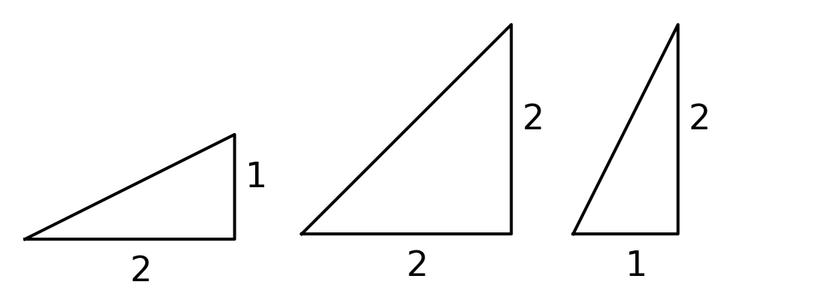
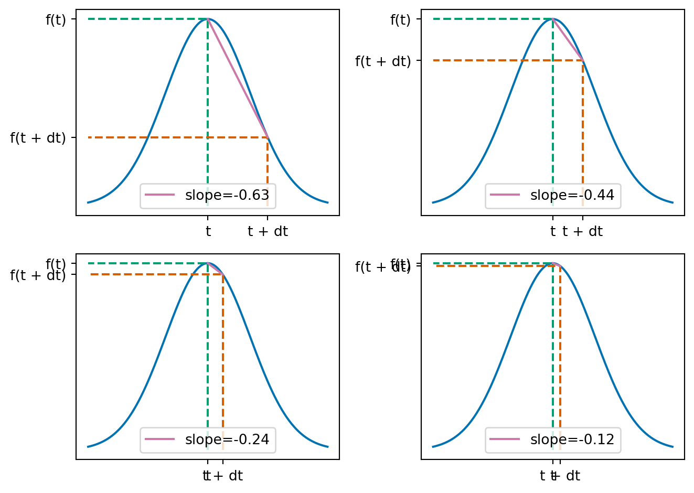
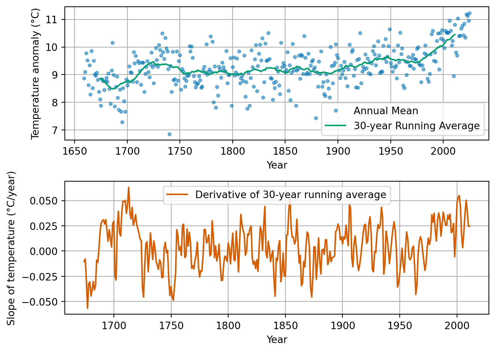
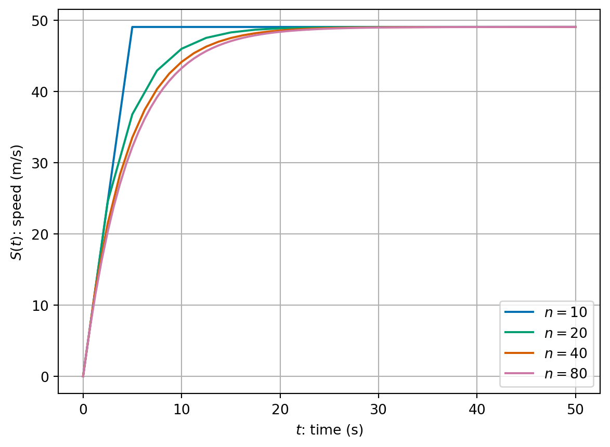

2 Introduction to dynamic problems
There are many models and problems where time plays an important role.
Examples TODO
Often these models use the language of derivatives and calculus to express the underlying processes. We will spend the first two lectures of this part of the module covering how we can solve this type of dynamic problem using numerical methods.
As a computer scientist, this will help you in your future studies by introducing:
- important methods for solving interesting problems often found in science and engineering, robotics and games design;
- the idea of splitting up a continuous problem into a finite number of steps which makes a tractable problem for a computer to solve;
- measuring errors and efficiency of approaches with a view to balancing between them.
2.1 Rates of change
We will start with a recap of material that you learnt last year to define the objects we want to discuss. We will do this in a way that’s driven by our applications and methods which will follow.
Suppose we know that a person is walking at a constant speed of 3 meters per second (m/s). What does that really mean? How far will they travel in:
- \(0.1\) seconds?
- \(0.01\) seconds?
- \(0.001\) seconds?
- \(10^{-6}\) seconds?
What does this tell us about speed?
We have that \[ \text{Distance travelled} = \text{speed} \times \text{time}, \] or equivalently: \[ \text{speed} = \frac{\text{distance travelled}}{\text{time}}. \]
What if the object’s speed was not constant? For example, we could define the speed \[\begin{equation} \label{eq:speed-ex} S(t) = -(t-1)(t+0.5). \end{equation}\]
How far would the object travel in one second now?
We could consider each tenth of a second separately and estimate the distance covered at each tenth of a second (assuming the \(S(t)\) is approximately constant in each interval):

0.44000000000000006 0.9999999999999999We could consider the same calculation of hundredths of seconds assuming that the speed is approximately constant in each interval:

0.41914999999999963 1.0000000000000007What about if we did a thousand steps

0.41691649999999947 1.0000000000000007In summary, we get
| intervals | increment size, h | total distance | |
|---|---|---|---|
| 0 | 1 | 1.00000 | 0.500000 |
| 1 | 10 | 0.10000 | 0.440000 |
| 2 | 100 | 0.01000 | 0.419150 |
| 3 | 1000 | 0.00100 | 0.416916 |
| 4 | 10000 | 0.00010 | 0.416692 |
| 5 | 100000 | 0.00001 | 0.416669 |
We appear to be converging to a limit as \(h \to 0\)…
We might express this mathematically as: \[\begin{equation*} \label{eq:S-derivative} S(t) = \lim_{h \to 0} \frac{D(t + h) - D(t)}{h}, \end{equation*}\] or that instant speed is the limit of average speed over smaller and smaller intervals.
Formally, we say that speed, \(S(t)\), is the derivative of distance, \(D(t)\), with respect to time and write \(S(t) = D'(t)\).
2.2 Geometric picture
We can plot the expression for the speed, \(S(t)\), from \(\eqref{eq:speed-ex}\) and it’s integral from 0 up to time \(t\), which we call the distance. \(D(t)\).

We see that the gradient (slope) of the green curve is the value of the blue curve.
- As the blue curve increases in value, the green curve increases in steepness.
- When the blue curve starts to decrease in value, the green curve decreases in steepness.
- By the time the blue curve has a value of zero the green curve is flat.
This gives us an alternative definition of derivative:
The function \(D'(t)\) is the function whose value is equal to the slope (or gradient) of \(D(t)\) at every value of \(t\).

For a straight line, we can use the formula for a straight line to find the gradient. The equation of a straight line with slope \(m\) is given by \[ f(t) = m t + c. \]
For a curve (i.e. non-straight line), we can approximate the slope with a straight line approximation (“chord”): \[ \frac{f(t + h) - f(t)}{h}. \] We can get a better approximation by taking a smaller value of \(h\)…. This leads us back to the definition of derivative (Definition 2.1).

We can apply similar understanding no matter what the underlying function is. For example, we could do the same things with more complicated real world data. Here is an example using climate data (data source: Met Office).

2.3 Formulation in terms of formulae
Let’s recall some of the more formal ideas that you learnt last year.
Definition 2.1 Let \(f \colon (a, b) \to \mathbb{R}\) be a function on an interval \((a, b)\) of the real line. We say that \(f\) is differentiable if for all \(x \in (a, b)\) the limit: \[ \lim_{h \to 0} \frac{f(x+h) - f(x)}{h}, \] exists and is finite. If \(f\) is differentiable then we call the function \(g \colon (a, b) \to \mathbb{R}\) the derivative of \(f\) defined by \[ g(x) = \lim_{h \to 0} \frac{f(x+h) - f(x)}{h}. \] We will write \(f'(x) := g(x)\) or \(\frac{\mathrm{d}}{\mathrm{d}x} f(x) = g(x)\).
Last year, you learnt some formula for derivatives. First that you can manipulate derivatives in nice ways: \[\begin{align*} \frac{\mathrm{d}}{\mathrm{d}x} (a f_1(x) + b f_2(x)) & = a \frac{\mathrm{d}}{\mathrm{d}x} f_1(x) + b \frac{\mathrm{d}}{\mathrm{d}x} f_2(x) && \text{(sum rule)}\\ \frac{\mathrm{d}}{\mathrm{d}x} (f_1(x) f_2(x)) & = \left( \frac{\mathrm{d}}{\mathrm{d}x} f_1(x) \right) f_2(x) + f_1(x) \left( \frac{\mathrm{d}}{\mathrm{d}x} f_2(x) \right) && \text{(product rule)} \\ \frac{\mathrm{d}}{\mathrm{d}x} (f_1(f_2(x))) & = \left. \frac{\mathrm{d}}{\mathrm{d}y} f_1(y) \right|_{y=f_2(x)} \frac{\mathrm{d}}{\mathrm{d} x} f_2(x) && \text{(chain rule)}. \end{align*}\]
You also learnt some derivatives of special functions: \[\begin{align*} \frac{\mathrm{d}}{\mathrm{d}x} (x^p) & = p x^{p-1} \\ \frac{\mathrm{d}}{\mathrm{d}x} \sin(x) & = \cos(x) \\ \frac{\mathrm{d}}{\mathrm{d}x} \cos(x) & = -\sin(x) \\ \frac{\mathrm{d}}{\mathrm{d}x} \exp(x) & = \exp(x). \end{align*}\]
Exercise 2.1 Compute the derivatives of the following functions:
- \(f_1(x) = 3 x^2 - 5 x + 1\)
- \(f_2(x) = \sin(x^2)\)
- \(f_3(x) = \exp(-x) \sin(2x)\)
- \(f_4(x) = \frac{1}{\eta(x)}\) (for an arbitrary function \(\eta\))
- \(f_5(x) = \tan(x)\). (Hint: use the fact that \(\tan(x) = \sin(x) / \cos(x)\) then use the your answer for \(f_4\) and the product and chain rules).
You also learnt about the opposite process to taking derivatives - integration - using Riemann sums:
Definition 2.2 Let \(f \colon (a, b) \to \mathbb{R}\) be a function on the interval \((a, b)\) of the real line.
Let \(x_0 = a < x_1 < \ldots < x_n = b\) be a partition of the interval \((a, b)\) into \(n\) smaller intervals \((x_{i-1}, x_i)\) for \(i = 1, \ldots, n\). We choose a point \(c_i\) in each interval \((x_{i-1}, x_i)\) and let \(h = \max_i x_{i} - x_{i-1}\). We define the Riemann sum of \(f\) by \[ s_n = \sum_{i=1}^n f(c_i) (x_{i} - x_{i-1}). \] Then we define the integral of \(f\) over \((a, b)\) is given by: \[ \int_a^b f(x) \, \mathrm{d}x = \lim_{h \to 0} \sum_{i=1}^n f(c_i) (x_{i} - x_{i-1}). \]
You learnt the following properties of integration: \[\begin{align*} \int_a^b c_1 f_1(x) + c_2 f_2(x) \, \mathrm{d}x &= c_1 \int_a^b f_1(x) \,\mathrm{d}x + c_2 \int_a^b f_2(x) \,\mathrm{d}x \\ \int_a^c f(x) \, \mathrm{d}x + \int_c^b f(x) \, \mathrm{d}x &= \int_a^b f(x) \, \mathrm{d}x. \end{align*}\]
You learnt that using the fundamental theorem of calculus you can compute integrals by inverting the derivative process: \[\begin{align*} \int_a^b x^p \, \mathrm{d}x & = \left[ \frac{1}{p+1} x^{p+1} \right]_{x=a}^b = \frac{1}{p+1} (b^{p+1} - a^{p+1}). \end{align*}\]
Exercise 2.2 Find the integrals of the following functions over \((0, 1)\).
- \(f_1(x) = 3 x^2 - 5x + 1\).
- \(f_2(x) = x + \frac{1}{x^2}\).
Remark 2.1. The problem of finding distance over the time interval \((0, 1)\), given speed, \(S(t)\), given in \(\eqref{eq:speed-ex}\), can be solved using integration.
Indeed, using that \(D'(t) = S(t)\), the fundamental theorem of calculus tells us that \(D(t)\) is the integral of \(S(t)\) with respect to time: \[\begin{align*} D(1) & = \int_0^1 S(t) \, \mathrm{d}t = \int_0^1 -(t-1) (t + 0.5) \,\mathrm{d}t \\ & = \int_0^1 -t^2 + 0.5 t + 0.5 \,\mathrm{d}t \\ & = \left[ -\frac{1}{3} t^3 + \frac{0.5}{2} t^2 + 0.5 t \right]_{t=0}^1 \\ & = (-\frac{1}{3} \times 1^3 + 0.25 \times 1^2 + 0.5 \times 1) - (-\frac{1}{3} \times 0^3 + 0.25 \times 0^2 + 0.5 \times 0) \\ & = \frac{5}{12} \approx 0.416667. \end{align*}\]
The rest of our section work in this week’s lectures is to solve similar equations in the case that our formula for \(S(t)\) would depend on \(t\) and also \(D\).
2.4 Differential equations
We have already seen and solved one differential equation - when we solved for the distance travel as a function of time: \(D'(t) = S(t)\). That equation related the derivative of \(D\) to a function of time \(S(t)\). When a model takes the form of an equation which involves one or more derivatives then it is called a differential equation.
Most models of dynamic processes take the form of differential equations including climate models, many models in engineering and science, financial models, physics engines in computer games and many more!
We are interested in equations of the form: \[ y'(t) = f(t, y(t)) \quad\text{subject to the initial condition}\quad y(t_0) = y_0. \] The data (things given to us) are:
- the initial time \(t_0\)
- the initial value of \(y\) at the initial time \(y_0\) - we call this the initial condition
- the right hand side function \(f\) which can be a function of both time and the solution \(y\),
and we must find a function \(y \colon [0, T) \to \mathbb{R}\) for some final time \(T\).
We have seen one example above with \(f(t, y) = S(t) = -(t-1)(t+0.5)\), \(t_0 = 0\) and \(y_0 = 0\). We will see more later.
Remark 2.2. One important consideration is that while many clever ways to solve differential equations exactly exist, most differential equations cannot be solved by hand. Thus numerical methods are not only convenient ways to find solutions of differential equations, in many cases they are essential.
The downside of a computational approach arises now since we are approximating the true solution. We will cover more on this in the next lecture.
Example 2.1 (Example differential equation - an object in free fall) Consider the following simple model for an object falling from a large height, based on the two assumptions:
- all objects are attracted downward with an acceleration due to gravity of \(9.81\,\mathrm{m}/\mathrm{s}^2\);
- air resistance causes an object to decelerate in proportion to its speed (i.e. the faster it travels the greater the air resistance).
The net acceleration downwards (i.e. rate of change of speed, \(S'(t)\)) is given by the sum of the two forces \(g\) and \(-k S(t)\): \[ S'(t) = g - k S(t). \]
How can we solve this equation?
- We cannot solve this integral exactly: \[ S(t) = S(0) + \int_0^T g - k S(t) \, \mathrm{d}t. \]
- There are techniques to solve this problem analytically (using so-called separation of variables) – but we are simple computer scientists looking for simple computer-based solutions instead!
- We can do similar to the above idea where we divide the time period into lots of small intervals and assume that everything is approximately constant on each time interval…

We see that as we take more time steps, we converge to a smooth solution.
2.5 Euler’s method
The approach used in Example 2.1 can be applied to any differential equation in the generic format: \[ y'(t) = f(t, y(t)) \quad\text{subject to the initial condition}\quad y(t_0) = y_0. \]
The general algorithm is very simple:
- Set initial values \(t^{(0)}\) and \(y^{(0)}\) from the initial condition.
- Loop over all time steps, until the final time \(T\), updating using the formula: \[\begin{align*} y^{(i+1)} &= y^{(i)} + h f(t^{(i)}, y^{(i)}) \\ t^{(i+1)} &= t^{(i)} + h. \end{align*}\]
The algorithm has one free parameter: the number of time steps, \(n\). Choosing more time steps increases the cost of the algorithm helps us converge to the solution (more on this later). Once the number of time steps is fixed, we can calculate the time step \(h = (T - t_0) / (n-1)\).
Example 2.2 Take two steps of Euler’s method to approximate the solution of \[ y'(t) = -(y(t))^2 + 3 t^2 \quad\text{subject to the initial condition}\quad y(1) = 2, \] for \(1 \le t \le 2\).
In this example we have:
- \(n=2\)
- \(t_0 = 1\)
- \(y_0 = 2\)
- \(T = 2\)
- \(h = (2 - 1)/2 = 0.5\)
- \(f(t, y) = -y^2 + 3t^2\).
We start with \(t^{(0)} = 1\) and \(y^{(0)} = 2\).
Step 1: \[\begin{align*} y^{(1)} & = y^{(0)} + h f(t^{(0)}, y^{(0)}) \\ & = 2 + 0.5 (-(2)^2 + 3 \times 1^{2}) = 1.5 \\ t^{(1)} & = t^{(0)} + h \\ & = 1 + 0.5 = 1.5 \end{align*}\]
Step 2: \[\begin{align*} y^{(2)} & = y^{(1)} + h f(t^{(1)}, y^{(1)}) \\ & = 1.5 + 0.5 (-(1.5)^2 + 3 \times 1.5^{2}) = 3.75 \\ t^{(2)} & = t^{(1)} + h \\ & = 1.5 + 0.5 = 2.0 \end{align*}\]
Exercise 2.3 Complete the next two time steps from Example 2.2 to find an approximation of the solution at \(T = 3\).
We see that Euler’s method is a very general method that is very easy to apply. We can very quickly apply lots of very small time steps for (what we hope will be) a good approximation of the solution. This generality and simplicity is very powerful.
In the next lecture, we will measure the error of this approach and see how we can use our understanding of the errors to find an improve formulation.
2.6 Summary
This lecture introduces you to how we study dynamic problems, situations where things change over time, and why numerical methods are such powerful tools for computer scientists. You have explored familiar ideas like speed and distance, seeing how they connect through derivatives and integrals. From there, the lecture builds up your understanding of what a derivative really means (both as a limit and as a slope), how to compute them, and how integration reverses the process.
Once these foundations are in place, you move into the world of differential equations, which are the backbone of models in physics, engineering, climate science, and even games. Because most real-world equations can’t be solved exactly, the lecture shows you how to approximate solutions using Euler’s method: a simple, step‑by‑step numerical technique that computers can apply easily. By the end, you’ve seen how to turn a continuous, time-dependent problem into something you can compute, setting you up for deeper work on accuracy and error analysis in the next session.